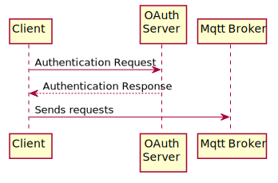

3 Architecture
High level Cambridge MQTT description
3.1 Client scenario
Ogólny diagram sekwencji na którym użytkownik:
-
Autoryzuje sie I zdobywa token
-
Subskrybuje sie do kolejki
-
Otrzymuje informacje z danego kanału
-
Odsubskrybowuje sie z kolejki
3.1.1 Authorization
Bardziej szczegółowy opis I diagram jak wygląda autoryzacja.
Co taki dany oauth token może zawierać?
